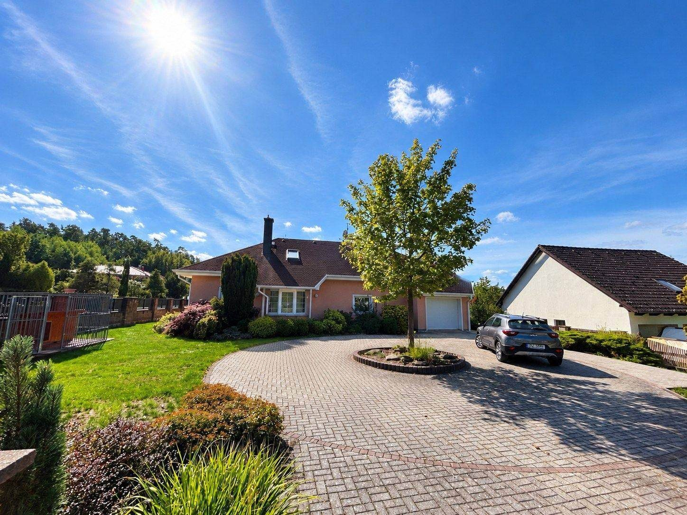

Nový domov
pod velkou střechou
Rodinný dům se zahradou 1 235 m² a zastřešeným bazénem, pět minut od Domažlic.
Víc než větší byt
Přízemí s velkorysým obytným prostorem, třemi dalšími pokoji a pracovnou je hlavní domov. Podkroví z roku 2015 je samostatná jednotka 4+kk s vlastní kuchyní, koupelnou a klimatizací. Můžete v ní mít rodiče nebo prarodiče blízko, každého se svým soukromím, nebo dospělé děti, které se ještě nechtějí stěhovat daleko.
Dvojgaráž, bazén, fotovoltaika a vzrostlá zahrada s altánem. Všechno, co rodina potřebuje, na jednom místě.
Podívejte se dovnitř i do zahrady
Dům, který funguje pro celou rodinu
Přízemí je srdce domu
Velkorysý obývací pokoj přechází do plně vybavené kuchyně a jídelny. Kávu si dáte v altánu, na zahradu se z obýváku projde francouzskými okny. V přízemí jsou dále dva dětské pokoje, ložnice se vstupem k bazénu, pracovna, koupelna a komora. Z dvojgaráže vejdete přímo do domu, za deště i v zimě suchou nohou.
Podkroví je druhý domov
Tři samostatné pokoje s výhledem do zeleně, koupelna, kuchyňský kout a šatna. Vestavba z roku 2015 je klimatizovaná a funguje jako samostatný byt. Suterén nabízí cca 60 m² zázemí: kotelnu, prádelnu a sklad pro kola, zahradní nábytek i zimní pneumatiky.
Zahrada je oáza
1 235 m² vzrostlých stromů, keřů a květin. Za domem stojí dřevěný altán na letní večery a zastřešený venkovní bazén o objemu cca 80 m³, který si užijete i mimo vrcholné léto.
Úsporné bydlení
- fotovoltaická elektrárna na střeše
- dva kotle, elektrický a plynový
- klimatizace v podkroví
Přehled výměr
- zastavěná plocha a nádvoří: 256 m²
- zahrada: 1 235 m²
- celková podlahová plocha: cca 393 m²
- užitná plocha: cca 300 m²
- dvojgaráž: cca 28 m²
- technické zázemí: cca 60 m²
- bazén: cca 80 m³
- rok dokončení: 2000 (podkroví 2015)
Dobré vědět
- Odpadní vody řeší vlastní ČOV, napojení na kanalizaci 11/2026, termín ale obec negarantuje.
- Probíhá převod licence k FTVE na současnou majitelku, dokončení se čeká během několika týdnů.
- Průkaz energetické náročnosti: třída E.
- Dům se prodává bez vybavení.
- Výměry vycházejí z veřejných listin, některé vnitřní plochy jsou orientační.
Lokalita a občanská vybavenost
Luženičky jsou klidná obec na Domažlicku. Do Domažlic se školami, školkami, obchody a lékaři dojedete autem za 5 minut. Odtud je dobré spojení na Plzeň i do sousedního Bavorska. Napojení na elektřinu, plyn a veřejný vodovod.
Projděte si dům sami
Klid venkova, město za rohem
Luženičky, okres Domažlice. Do Domažlic pět minut autem, dobré spojení na Plzeň i do Bavorska.